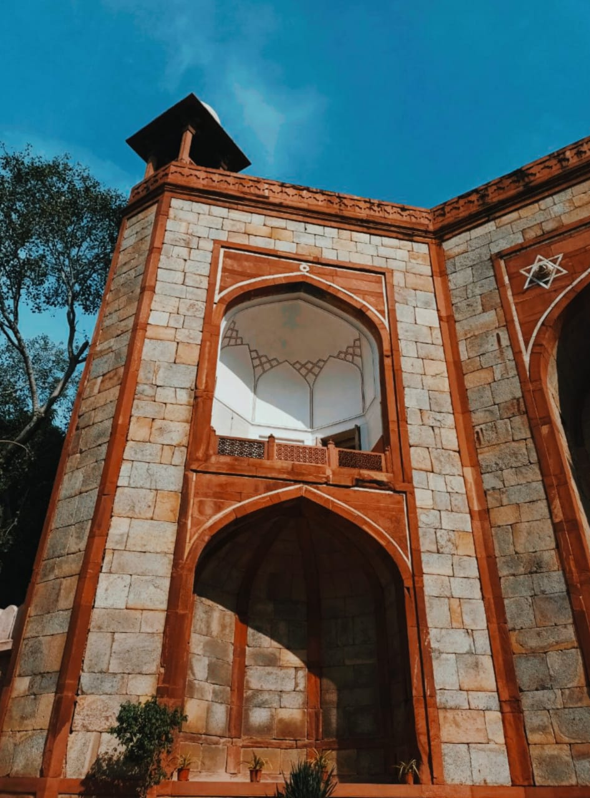

- 
Humayun's Tomb
The Mughal emperor Mirza Nasir al-Din Muhammad, popularly known as Humayun, is buried in Humayun's tomb (Persian: Maqbara-i Humayun), which is located in Delhi, India. Under the patronage of Empress Bega Begum, Humayun's first wife and primary consort, the mausoleum was commissioned in 1558 and constructed by Persian architects Mirak Mirza Ghiyas and his son Sayyid Muhammad.It is situated in Nizamuddin East, Delhi, near the Dina-panah Citadel, also known as Purana Qila (Old Fort), which Humayun discovered in 1538. It was the first garden-tomb on the Indian subcontinent. Additionally, it was the first building to use red sandstone on that big of a scale.Following its 1993 designation as a UNESCO World Heritage Site, the tomb has undergone considerable restoration work, which is now complete.
A number of smaller monuments can be found lining the path that leads up to Humayun's main tomb enclosure from the main entrance in the west. One of these monuments, the tomb complex of Isa Khan Niazi, an Afghan noble who fought against the Mughals in Sher Shah Suri's court and was built in 1547 CE, even predates the main tomb itself by twenty years.
Early examples of Islamic architecture in the Central Asian and Persian styles were brought to the Indian subcontinent by the Turkic and Mughal dynasties. By the late 12th century, early examples of these monuments could be seen in and around Delhi, the capital of the Delhi Sultanate. Let's start with the Turkic Slave dynasty, who constructed the Qutb Minar in 1192 and the Quwwat-ul-Islam mosque next to it in 1193 CE. Over the ensuing centuries, foreign rulers reigned over North India in turn, giving rise to Indo-Islamic architecture.
- The tomb is an octagonal structure with four long sides, chamfered edges, and a double dome. The central chamber houses the cenotaph of Emperor Humayun, while the main dome is supported by squinches and flanked by pillared kiosks.
- The tomb is surrounded by a quadrilateral garden called Charbagh, which has paved walkways, water channels, a bath chamber, and a pavilion.
- The walled tomb complex has two entrance gateways, one on the south and the other on the west.